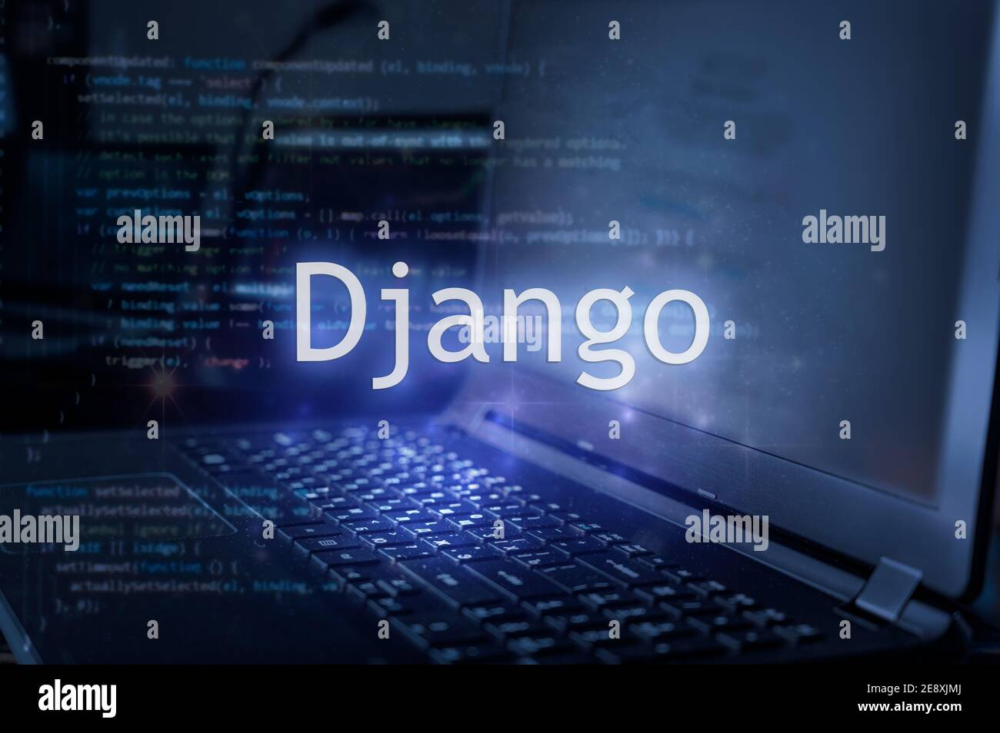

Django (/ˈdʒæŋɡoʊ/ JANG-goh; sometimes stylized as django)[5] is a free and open-source, Python-based web framework that runs on a web server. It follows the model–template–views (MTV) architectural pattern.[6][7] It is maintained by the Django Software Foundation (DSF), an independent organization established in the US as a 501(c)(3) non-profit. Django's primary goal is to ease the creation of complex, database-driven websites. The framework emphasizes reusability and "pluggability" of components, less code, low coupling, rapid development, and the principle of don't repeat yourself.[8] Python is used throughout, even for settings, files, and data models. Django also provides an optional administrative create, read, update and delete interface that is generated dynamically through introspection and configured via admin models.
